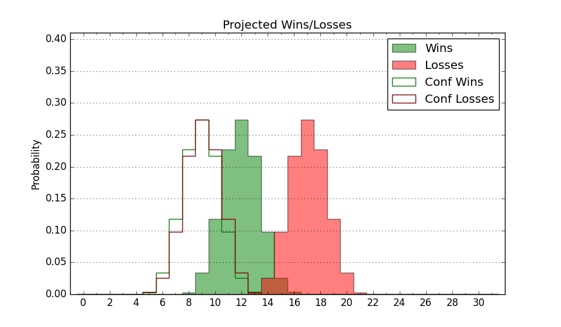

| Home | Game Probabilities | Conferences | Preseason Predictions | Odds Charts | NCAA Tournament |
| City: | Daytona Beach, Florida | |
| Conference: | Southwest (5th)
| |
| Record: | 5-4 (Conf) 8-12 (Overall) | |
| Ratings: | Comp.: -15.8 (322nd) Net: -15.6 (320th) Off: 94.9 (325th) Def: 110.5 (287th) SoR: 0.0 (156th) |
| Remaining | ||||||
|---|---|---|---|---|---|---|
| Date | Opponent | Win Prob | Pred. | |||
| 2/10 | Prairie View A&M (303) | 57.9% | W 76-73 | |||
| 2/12 | Texas Southern (289) | 53.5% | W 70-69 | |||
| 2/17 | @ Alcorn St. (314) | 33.2% | L 75-80 | |||
| 2/19 | @ Jackson St. (290) | 25.5% | L 72-80 | |||
| 2/24 | Alabama A&M (343) | 75.6% | W 80-72 | |||
| 2/26 | Alabama St. (300) | 56.9% | W 69-67 | |||
| 3/2 | @ Southern (221) | 15.8% | L 66-78 | |||
| 3/4 | @ Grambling St. (312) | 32.3% | L 66-71 | |||
| 3/9 | @ Florida A&M (340) | 43.4% | L 72-74 | |||
| Previous | Game Score | |||||
| Date | Opponent | Win Prob | Result | Off | Def | Net |
| 11/6 | @Minnesota (81) | 3.7% | L 60-80 | -0.1 | 5.3 | 5.1 |
| 11/20 | Charleston Southern (309) | 60.3% | W 79-73 | 14.6 | -9.6 | 5.0 |
| 11/24 | (N) Lamar (260) | 30.6% | L 65-83 | -18.7 | 1.9 | -16.8 |
| 11/25 | (N) Delaware St. (324) | 51.2% | L 64-72 | -6.4 | -5.5 | -11.9 |
| 11/26 | @Longwood (191) | 13.0% | L 48-69 | -23.3 | 13.4 | -9.9 |
| 12/1 | Incarnate Word (336) | 69.9% | W 96-82 | 8.8 | 2.3 | 11.1 |
| 12/9 | @South Carolina St. (325) | 36.5% | W 80-71 | 9.9 | 8.9 | 18.9 |
| 12/16 | @Fort Wayne (169) | 10.5% | L 63-86 | -5.6 | -8.1 | -13.7 |
| 12/20 | @Chicago St. (288) | 25.2% | L 54-55 | -11.9 | 16.7 | 4.8 |
| 12/29 | @UCF (62) | 2.7% | L 54-98 | -10.8 | -0.6 | -11.4 |
| 12/31 | @Mississippi St. (46) | 2.1% | L 62-85 | 1.8 | 2.2 | 4.0 |
| 1/6 | Florida A&M (340) | 72.3% | W 98-86 | 17.5 | -12.6 | 4.9 |
| 1/13 | Grambling St. (312) | 61.8% | L 69-79 | -3.2 | -21.0 | -24.2 |
| 1/15 | Southern (221) | 39.1% | W 83-81 | 14.5 | -6.6 | 7.9 |
| 1/20 | @Mississippi Valley St. (362) | 79.5% | W 80-64 | 4.5 | 7.5 | 11.9 |
| 1/22 | @Arkansas Pine Bluff (320) | 34.7% | L 72-76 | -0.7 | 0.7 | -0.0 |
| 1/27 | Jackson St. (290) | 53.8% | W 82-71 | 4.8 | 7.0 | 11.8 |
| 1/29 | Alcorn St. (314) | 62.8% | L 67-70 | -9.9 | -1.5 | -11.4 |
| 2/3 | @Alabama St. (300) | 27.9% | W 79-68 | 14.9 | 10.0 | 24.9 |
| 2/5 | @Alabama A&M (343) | 47.6% | L 68-72 | -4.6 | -3.7 | -8.3 |
| Stats & Trends | |||||
|---|---|---|---|---|---|
| Current | Day | Week | Month | Season | |
| Composite | -15.8 | +0.0 | +0.9 | +1.4 | +4.2 |
| Comp Rank | 322 | -- | +5 | +10 | +33 |
| Net Efficiency | -15.6 | +0.0 | +0.9 | +0.9 | -- |
| Net Rank | 320 | -- | +4 | +3 | -- |
| Off Efficiency | 94.9 | -0.0 | +0.7 | +2.2 | -- |
| Off Rank | 325 | -- | +5 | +8 | -- |
| Def Efficiency | 110.5 | +0.0 | +0.2 | -1.3 | -- |
| Def Rank | 287 | -1 | +9 | -5 | -- |
| SoS Rank | 355 | -- | -2 | -72 | -- |
| Exp. Wins | 11.9 | +0.0 | +0.5 | +0.4 | +2.0 |
| Exp. Conf Wins | 8.9 | +0.0 | +0.5 | +0.4 | +2.1 |
| Conf Champ Prob | 0.4 | -0.1 | -0.3 | -1.3 | -1.7 |

| Advanced Stats | ||
|---|---|---|
| Stat | Value | Rank |
| Off Eff FG % | 0.448 | 334 |
| Off Ast Ratio | 0.118 | 324 |
| Off ORB% | 0.266 | 208 |
| Off TO Rate | 0.168 | 309 |
| Off FT Ratio | 0.335 | 167 |
| Def Eff FG % | 0.545 | 319 |
| Def Ast Ratio | 0.173 | 348 |
| Def ORB% | 0.330 | 336 |
| Def TO Rate | 0.180 | 23 |
| Def FT Ratio | 0.488 | 358 |